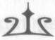

BÖLÜM ON SEKİZ
BİR DOST ELVEDA DİYOR
G e c e çökerken Crissy Hava Meydanı'na indik."
Dr. Chase, Sopwith Devesi'nden iner inmez Annabeth ona koştu ve sımsıkı sarıldı. "Baba! Uçtun... Onları vurdun...
Tanrılar aşkına! Gördüğüm en harikulade şeydi!"
Babası utandı, kızardı. "Eh, orta yaşlı bir ölümlü için fena değil herhalde."
"Ama o ilahi bronz kurşunlar! Onları nereden buldun?"
"Ha? Tamam. Virginia'daki odanda ciddi miktarda melez silahı bırakmıştın. Sen... gitmeden önce."
Annabeth başını eğdi, utanmış gibiydi. Dr. Chase'in "kaç-
madan önce dememek için oldukça dikkat ettiğini fark ettim.
"Onları eritip fişeklik yapmayı denedim," diye devam etti. "Ufak bir deney işte."
Sanki önemli bir şey değilmiş gibi söylüyordu ama gözlerinin içi parlıyordu. Birden Athena'nın, Zanaat ve Bilgelik Tanrıçası'nın bir zamanlar bu adama aşık olduğunu hatırladım. Bu adamın içinde kusursuz bir deli bilim adamı vardı.
"Baba..." Annabeth sözünün devamını getiremedi.
"Annabeth, Percy," diyerek Thalia araya girdi. Sesinde bir telaş vardı. O ve Artemis, Zoe'nin yanına diz çökmüşler, avcının yaralarını sarıyorlardı.
270 NymphE
Annabeth'le beraber onlara yardıma koştuk ama yapabileceğimiz pek bir şey yoktu. Yanımızda ne ambrosia vardı ne de nektar. Sıradan ilaçların da bir faydası olmayacaktı.
Karanlık çökmüştü ama Zoe'nin yaralarının iyi olmadığını görebiliyordum. Titriyordu ve etrafındaki o belli belirsiz hare soluyordu.
"Onu sihirle iyileştiremez misiniz?" diye sordum Artemis'e. "Yani... ne de olsa siz bir tanrıçasınız."
Artemis'in içinde bir sıkıntı var gibiydi. "Hayat kırılgan-dır Percy. Kaderler ipini kesmeye karar vermişse, elimden gelĞcek bir şey yok. Ama deneyebilirim."
Elini Zoe'nin böğrüne koymaya çalıştı. Ama Zoe tanrıçayı bileğinden kavradı. Tanrıçanın gözlerine baktı ve karşılıklı bir anlayışa ulaştılar sanki.
"Ben... size iyi hizmet ettim mi?" diye fısıldadı Zoe.
"Hep şeref verdin," dedi Artemis yumuşak bir sesle.
"Hizmetkarlarımın en iyisiydin."
Zoe'nin yüzüne bir rahatlama geldi. "Dinleneceğim. En sonunda."
"Zehri iyileştirmeyi deneyebilirim, cesur çocuğum."
Ama o an, Zoe'yi öldürenin yalnızca zehir olmadığını anladım; babasının son darbesiydi. Zoe ta başından beri Kahin'in ona söylediği kehanetin anlamını bilmişti: babası-
nın eliyle ölecekti. Yine de bu görevi üstlenmişti. Beni kurtarmayı seçmişti ve Atlas'ın öfkesi onun içini parçalamıştı.
Thalia'ya baktı ve elini tuttu.
"Tartıştığımız için çok üzgünüm," dedi Zoe. "Birer kız kardeş olabilirdik."
"Benim hatam," dedi Thalia, gözlerini kırpıştırıyordu sürekli.
"Luke, kahramanlar, erkekler... Hepsinde haklıydın."